Filters and edges, then two applications: hybrid images and multiresolution blending.
Two from-scratch convolutions (four nested loops, and a two-loop version that vectorizes the
kernel-patch multiply-sum), compared against scipy.signal.convolve2d, all on a
9×9 box filter.
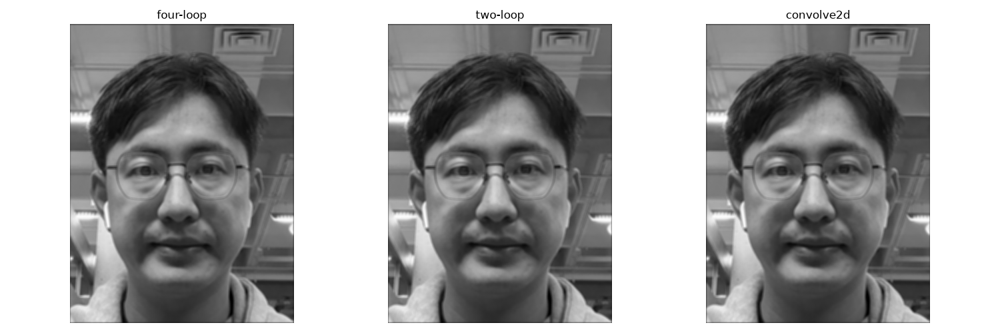
All three match. Runtime: four-loop 22.5s, two-loop 1.48s, convolve2d 0.085s. All three zero-pad the border, so edge pixels come out darker.
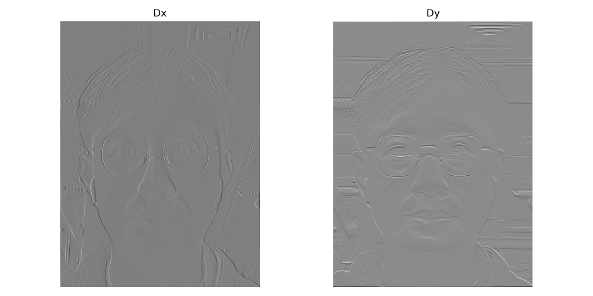
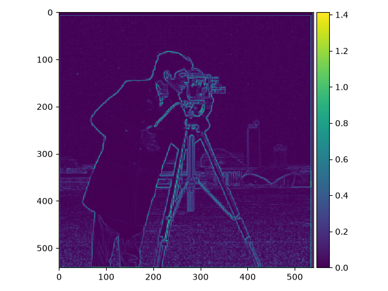
Gradient magnitude
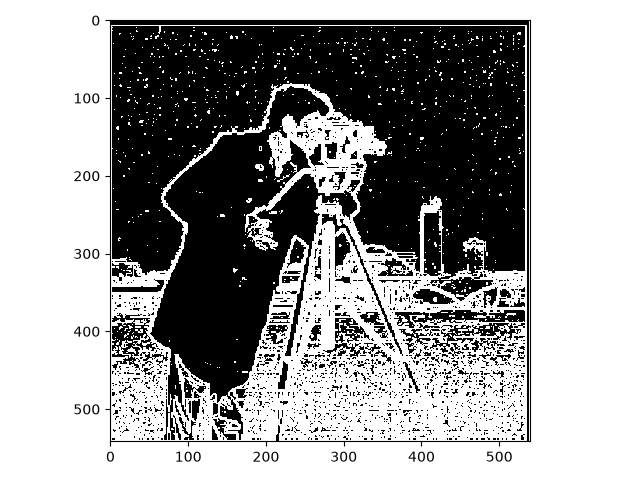
Binarized (threshold 0.03)
Threshold 0.03 is a middle ground: lower and sensor noise starts showing up as false edges, higher and faint real edges (soft shadows, low-contrast boundaries) start dropping out.
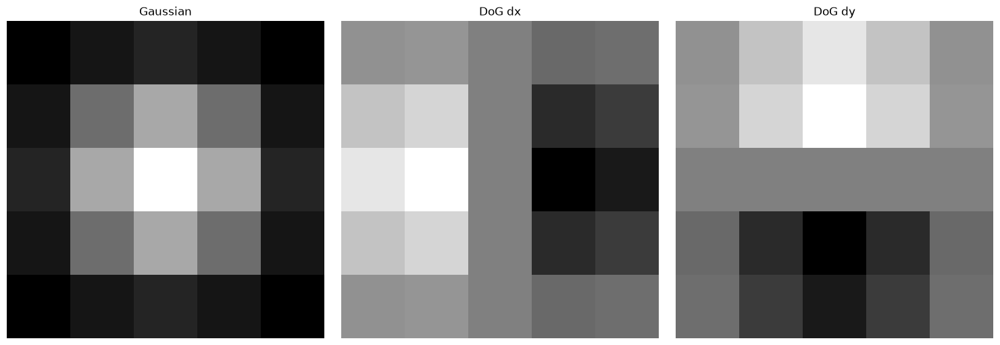
Blur, then derivative
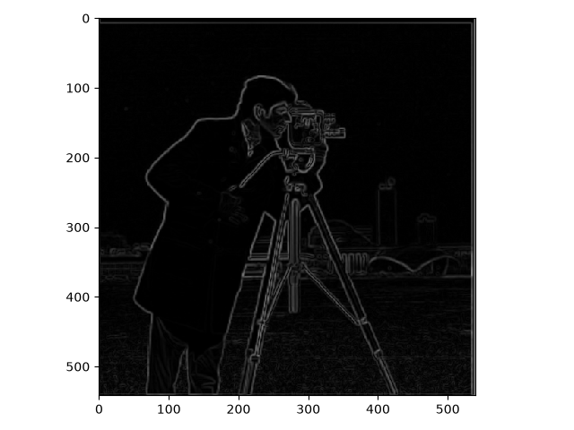
Single DoG convolution
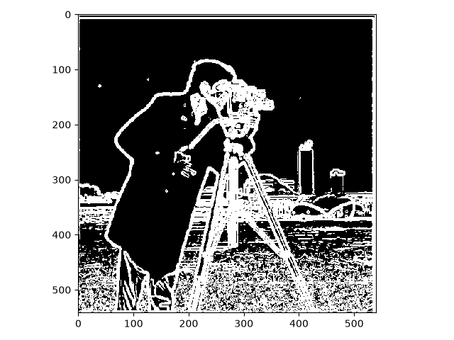
Blur, then derivative
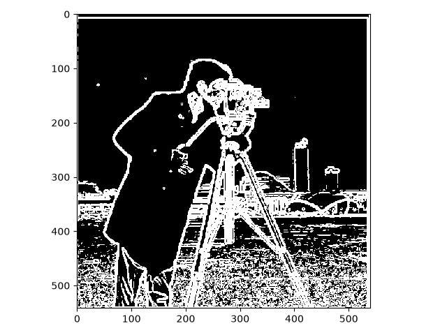
Single DoG convolution
Blur-then-derivative and the single DoG convolution give the same result (convolution is associative). Both are cleaner than plain finite differences. The blur removes noise before it can show up as an edge.
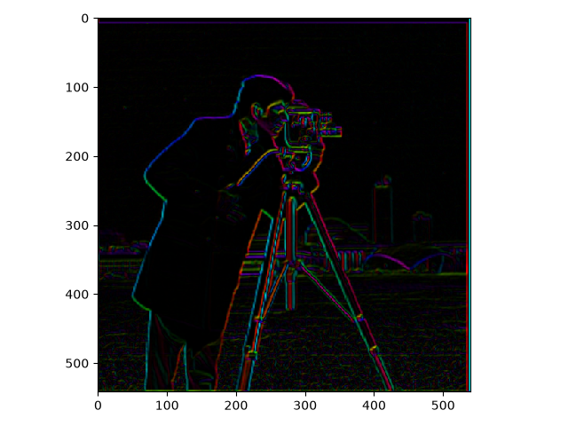
Hue = gradient direction. Saturation is fixed at 1. Value = gradient magnitude, normalized to its max.
Unsharp masking is sharpened = original + alpha * (original − blurred): subtracting a
blurred copy from the original isolates the high frequencies, and adding those back in (scaled by
alpha) boosts them.
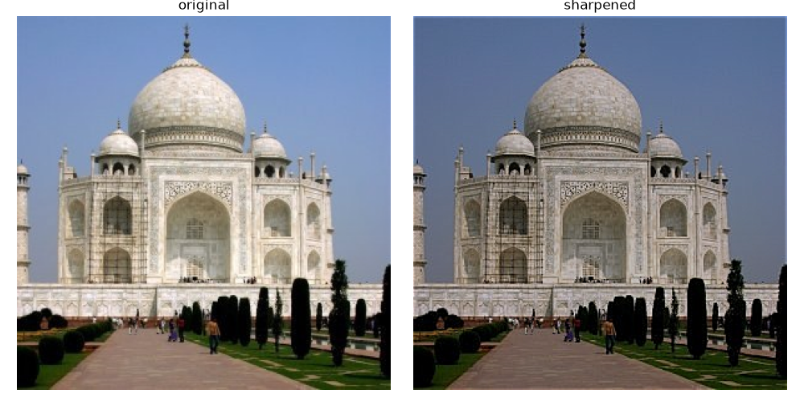
Taj Mahal
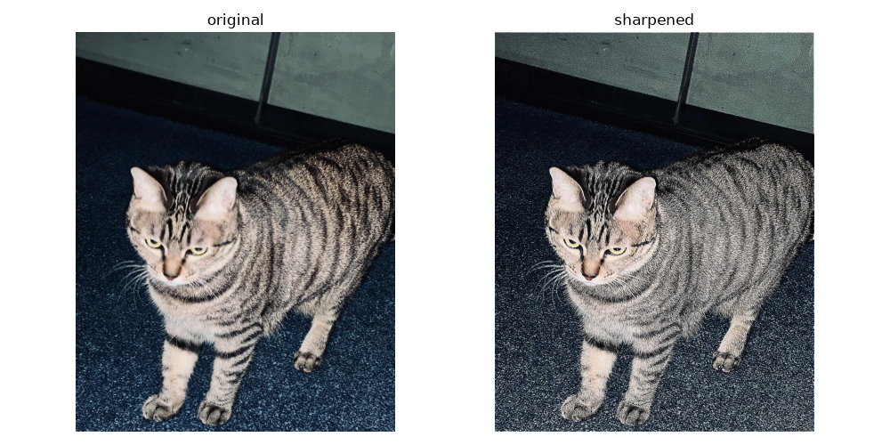
My own image
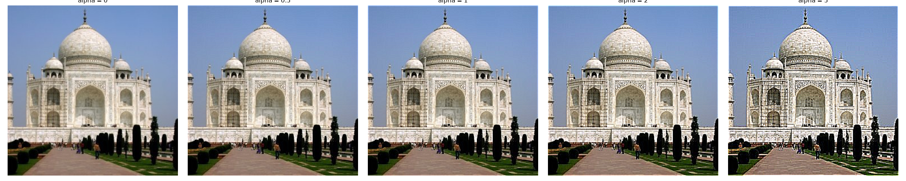
Higher alpha means a stronger high-frequency boost, more visible ringing/haloing past a point.
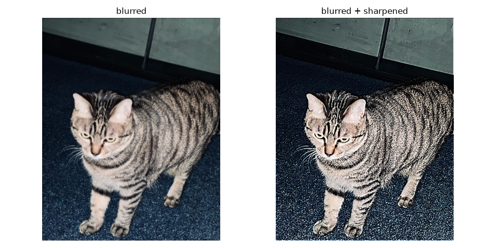
Derek + Nutmeg, full process:
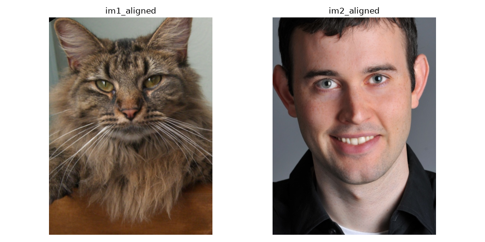
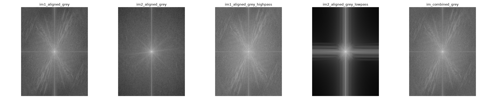
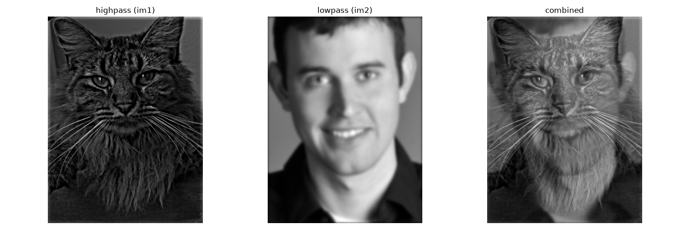
Lowpass is a 21×21 Gaussian (sigma picked automatically by cv2.getGaussianKernel from
the kernel size). Highpass is an impulse minus 0.7× a wide (sigma 10) Gaussian, wide enough
to strip out most of the low-frequency content, with the 0.7 weight (rather than 1.0) left so it doesn't
over-subtract and ring at edges.
Two more hybrids, originals + final only:
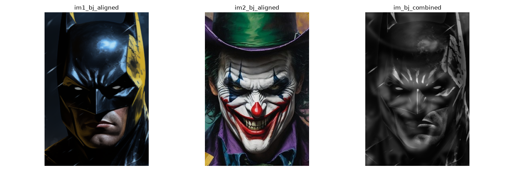
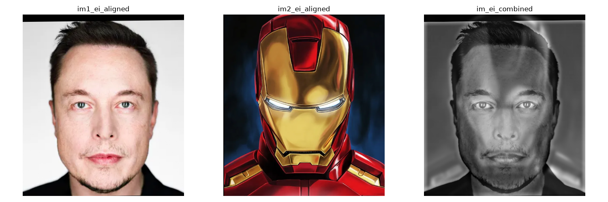
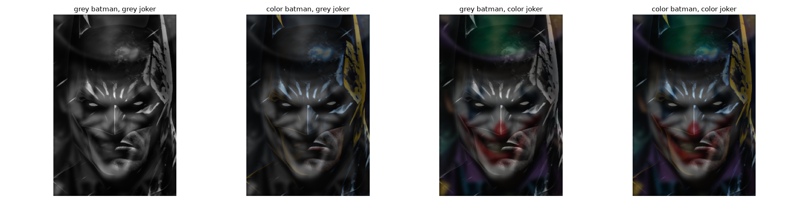
Color matters in the low-frequency half. Barely matters in the high-frequency half.
Apple + orange, stack levels and the full blend process:
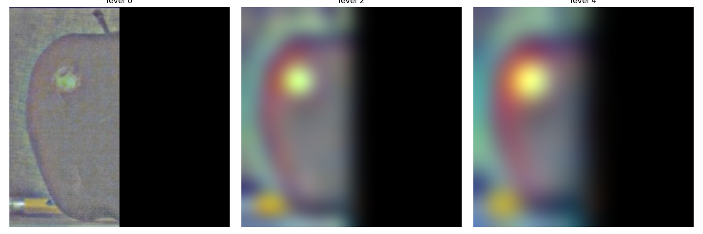
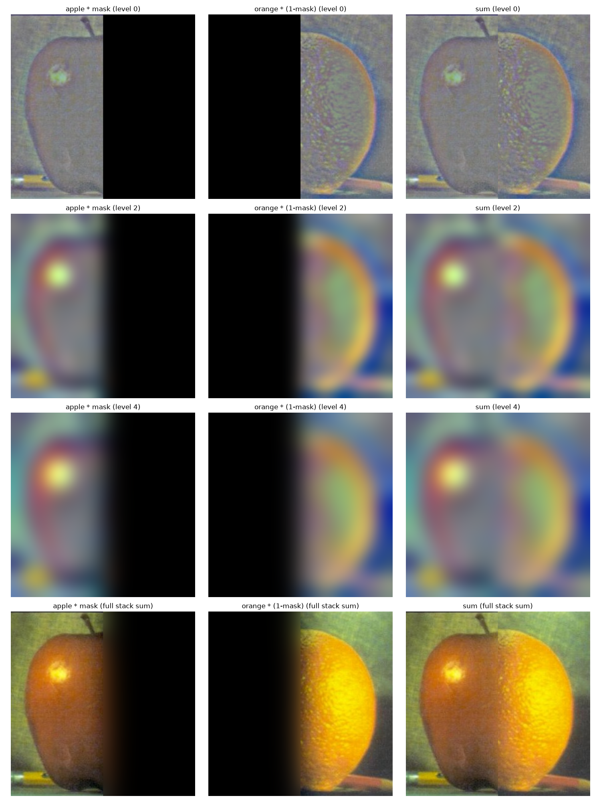
Each row is one pyramid level: apple×mask, orange×(1−mask), and their sum. The last row sums the entire stack instead of one level. That's the final blended image.
Two more blends, one with a straight-line mask and one with an irregular mask:
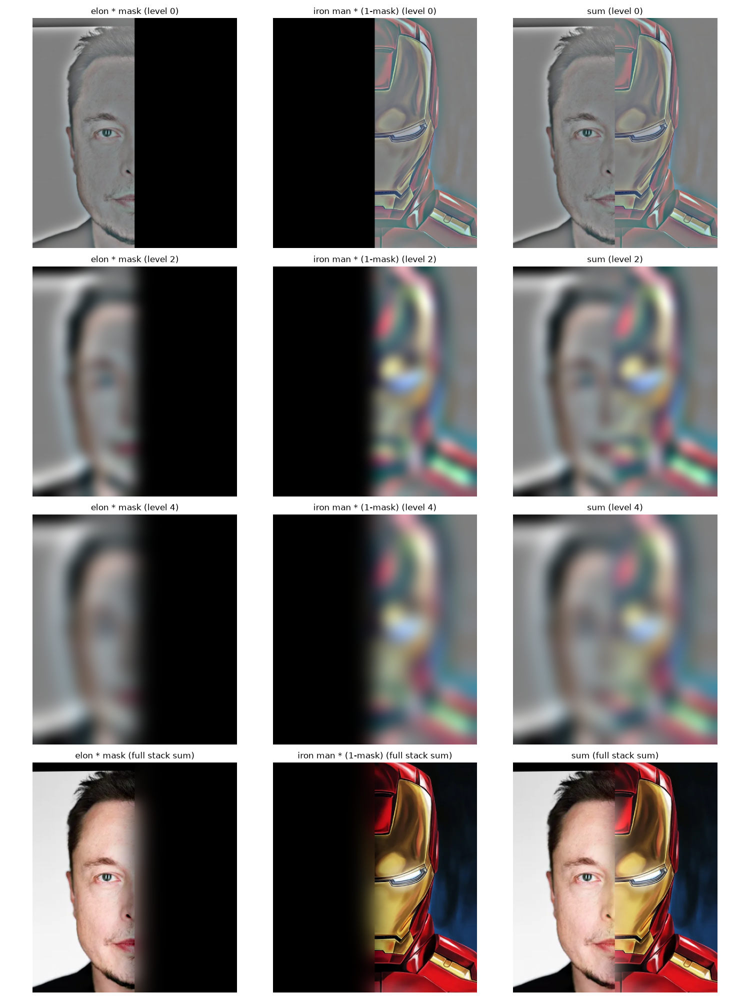
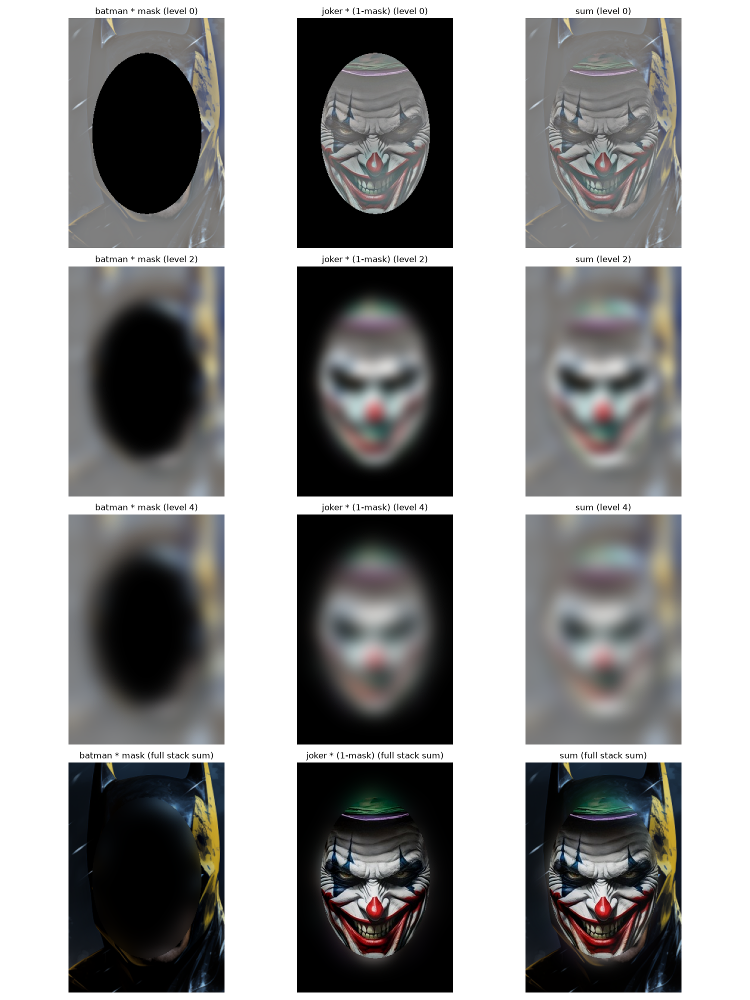
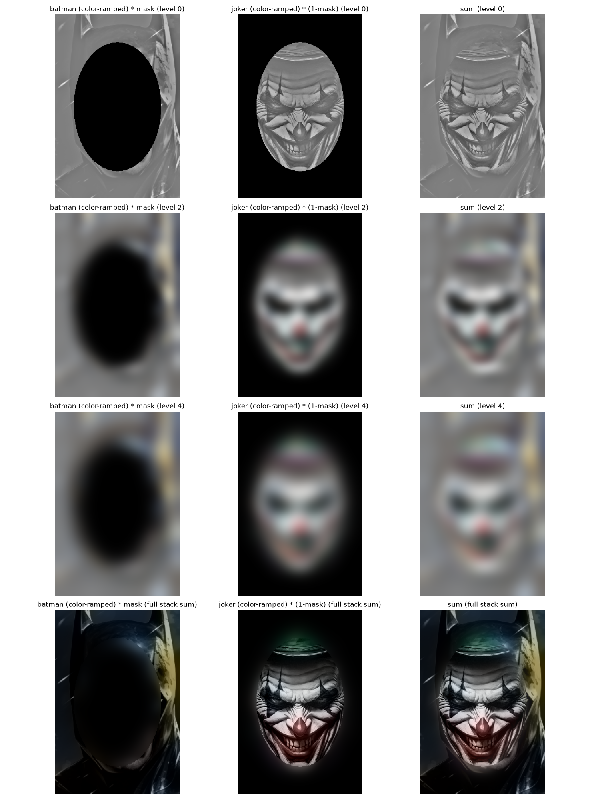
Color scaled down at the fine levels, full strength at the coarse residual. Luminance untouched at every level. Humans are more sensitive to color differences at coarse scale than at fine detail, so that's where color should matter most.